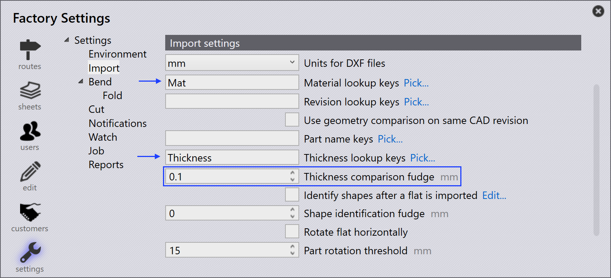

Import

Uitgangsinstellingen
Plat patroon opslaan - Schakel deze optie in om het platte patroon van een geïmporteerd onderdeel op te slaan.
Formaat voor plat patroon - Deze optie wordt gebruikt om te kiezen tussen DXF- of GEO-bestandsformaten.
Doellocatie plat patroon - Dit is de locatie waar het platte patroon zal worden opgeslagen.
Importinstellingen
Eenheden voor dxf-bestanden - Dit is de meeteenheid waarmee een DXF- bestand wordt geïmporteerd, de gebruiker kan kiezen tussen mm of inch.
Toetsen voor materiaal opzoeken - Meerdere opzoekvermeldingen kunnen worden toegewezen met behulp van een kommascheidingsteken ertussen. Wanneer een onderdeel wordt geïmporteerd, gebruikt TruSmartCAM deze sleutels om te zoeken naar materiaalwaarden. De gezochte waarden worden vervolgens gebruikt om de grondstof op te lossen. De oorspronkelijke waarden worden opgeslagen in de onderdeel Misc Properties.
Toetsen voor revisie opzoeken - Wanneer een onderdeel wordt geïmporteerd, wordt de revisiewaarde van het onbewerkte onderdeelbestand (het onderdeelbestand dat wordt geïmporteerd) vergeleken met de bestaande revisiewaarde in de repository. De import wordt afgebroken als de revisie hetzelfde is. De aangepaste veldtoewijzing wordt nu ook ondersteund voor de DXF-bestanden. Voor de DXF-bestanden worden de aangepaste veldgegevens geëxtraheerd uit de tekstlaag in de tekening of een PPI-bijlage.
Geometrievergelijking gebruiken op zelfde CAD-revisie - Vergelijkt geometrie bij het importeren van een onderdeel met dezelfde CAD-revisie en vraagt de gebruiker om de import te vervangen of over te slaan als verschillen worden gedetecteerd, Zie Import configuration voor meer details.
Toetsen voor stuknaam - Deze optie werkt vergelijkbaar met het materiaal en Toetsen voor revisie opzoeken. Stel een of meer Toetsen voor stuknaam in om de PPI Stuknaam te gebruiken in plaats van de bestandsnaam als de onderdeelnaam.
Toetsen voor dikte opzoeken - Meerdere opzoekvermeldingen kunnen worden toegewezen met behulp van een kommascheidingsteken ertussen. Wanneer een onderdeel wordt geïmporteerd, gebruikt TruSmartCAM deze sleutels om te zoeken naar diktewaarden. De gezochte waarden worden vervolgens gebruikt om de dikte op te lossen. De oorspronkelijke waarden worden opgeslagen in de onderdeel Misc Properties.
Diktevergelijking correctiefactor - Dit wordt gebruikt bij het opzoeken van de grondstof wanneer een onderdeel wordt geïmporteerd. TruSmartCAM probeert de grondstof op te lossen nadat de materiaalnaam en dikte zijn geparseerd. Voor meer informatie, zie het onderwerp Thickness fudge hieronder.
Vormen identificeren nadat een plat stuk is geïmporteerd - Wanneer een onderdeel wordt geïmporteerd, kunnen binnenvormen binnen het onderdeel automatisch worden herkend en geïdentificeerd.
Vormdetectie correctiefactor - De vormidentificatie fudge-waarde kan worden ingesteld op:
-
Global level - Deze waarde wordt gebruikt als standaard voor alle vormen.
-
Individual Shape Level - De standaardwaarde kan worden overschreven door de fudge-waarde in te stellen op het niveau van de individuele vorm. Het selecteren van de vorm in het Shape Library-dialoogvenster geeft de fudge-waarde weer. Standaard is dit ingesteld op 0, en de standaard globale waarde wordt gebruikt voor dergelijke vormen.
Plat horizontaal draaien - Over het algemeen zijn snijmachinetafels rechthoekig en breder. Om de gereedschapshaalbaarheid te verbeteren, draait u het onderdeel langs de onderdeelbreedte nadat het onderdeel is geïmporteerd.
Drempel voor stukrotatie - Stel dit in als het minimale aantal om rotatie toe te staan. Elk onderdeel dat kleiner is dan de ingestelde waarde, wordt niet geroteerd.
Div. instellingen
Vooraf importeren van extern gereedschap inschakelen - Schakel de pre-import externe tools importoptie in om Creo Reader in te schakelen. TruSmartCAM uploadt de vooraf geëxtraheerde familie-instanties van het verwijderde onderdeel. Houd er rekening mee dat de instantie-extractie wordt uitgevoerd tijdens het uploaden van het onderdeel (als een pre-import operatie), dus de Creo-software moet zijn geïnstalleerd op de computer van waaruit het onderdeel wordt geüpload.
Tekeningkleuren in miniatuurweergaven van Platte stukken negeren voor duidelijkheid - Schakel deze optie in om de grijswaarden scherpe miniaturen te genereren. De laagkleuren en tekstentiteiten worden genegeerd omwille van de beeldhelderheid.
Slechts één engine gebruiken voor alle importeertaken - Wanneer ingeschakeld, wordt slechts één enginekern gebruikt voor belangrijke taken.
Thickness fudge
De Diktevergelijking correctiefactor kiest de dichtstbijzijnde plaatdiktewaarde wanneer een gewenste plaatdikte niet beschikbaar is in de voorraad door de diktewaarde van platen in de voorraad te vergelijken.
Laten we bijvoorbeeld het volgende aannemen:
-
We hebben een onderdeel met een plaatdikte van 1,6 mm en materiaal als staal.

-
Diktevergelijking correctiefactor waarde is 0,1 mm.

-
Voorraad heeft stalen platen met dikte 1,5 mm, 1,55 mm en 1,7 mm.

TruSmartCAM kiest een plaat met de dichtstbijzijnde diktewaarde na het vergelijken van de Diktevergelijking correctiefactor waarde (0,1 mm) met het geïmporteerde item (met een meting van 1,6 mm). In dit geval zal 1,55 mm de selectie zijn.